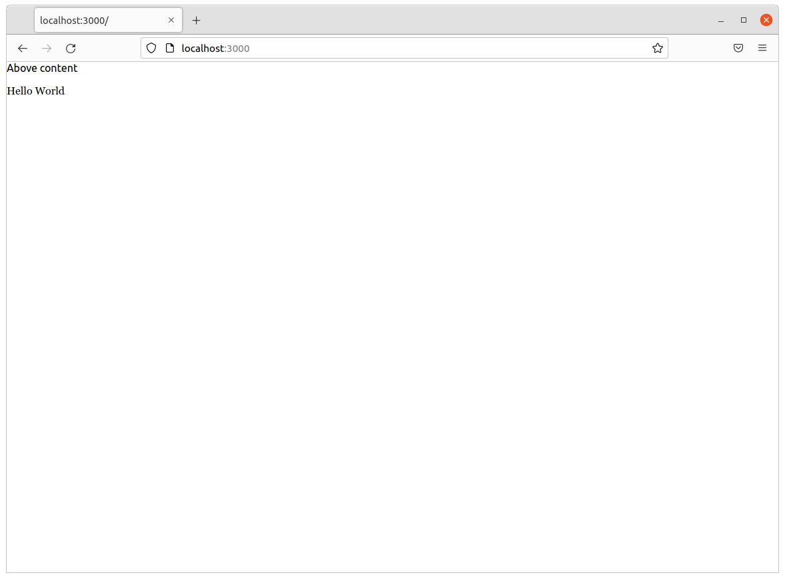

5. Template¶
Navigate back to localhost:3000 in your browser. You should see the same default homepage as before.

Its contents is configured in the index.nunjucks file found in the directory Yeoman created. It uses a templating language for JavaScript invented at Mozilla called Nunjucks.
You can edit the page by changing what’s found inside of the content block. Make a change and save the file.
{% block content %}
<p>Hello World</p>
{% endblock %}
You should see it immediately show up thanks to a BrowserSync, a popular feature of Gulp that automatically updates your test site after you make a change.

Now, look closely at the index.nunjucks file. You will notice that it doesn’t include code for much of what you expect from an HTML page. For instance, you won’t see the class <html> or <body> tags. Nor will you find the stylesheets that dicatate how a page looks.
That’s because that boilerplate has been moved back into a parent template “extended” by the index file with a line of Nunjucks code at the top of the page.
{% extends '_layouts/base.nunjucks' %}
That “base” file, sometimes called the “layout,” can be inherited by other pages on your site to avoid duplication and share common code. One change to a parent file instantly ripples out to all pages the extend it.
This approach to “template inheritance” is not just found in Nunjucks. It can be found in other templating systems, including Python ones like Django and Jinja. It’s probably even used at some level in your organization’s CMS.
You can find the base layout packaged with our framework by following the path and opening the _layouts/base.nunjucks file. You’ll see it includes a set of block tags, like content, that act as placeholders for use in templates that extend it.
Make a small change to _layouts/base.nunjucks above the content block and save the file.
Above content
{% block content %}{% endblock %}
You should see the change on our site, with the new line appearing above the paragraph we added earlier to the index file.
{kind=link}
Most newsrooms that use a similar system have their own base template for their custom pages. Graphic artists and designers install and extend it as the first step in their work. They develop their custom page within its confines and largely accept the furniture it provides, like the site’s header and footer, fonts and common color schemes. This allows them to work more quickly because they do not have to bother with reinventing their site’s most common elements.
:::{note} While most newsrooms keep their base templates to themselves, a few have published them as open-source software. You can find them online, if you know where to look. They include:
The Los Angeles Times’s HTML Cookbook
The Texas Tribune’s style guide
Politico’s style guide :::
For this class, we have developed a simpelified base template that will act as a stand-in for a real newsroom’s base template. It is not as sophisticated or complete as a real-world example, but it will provide all of the basic elements we will need.
You can find it in the code block below. Copy all of its contents and paste them into _layouts/base.nunjucks, replacing everything.
<!doctype html>
<html lang="en">
<head>
<meta charset="utf-8">
<meta name="viewport" content="width=device-width, initial-scale=1.0">
<title>First Graphics App</title>
<link rel="stylesheet" href="https://maxcdn.bootstrapcdn.com/bootstrap/4.0.0/css/bootstrap.min.css">
<link rel="stylesheet" href="styles/main.css">
<link rel="stylesheet" href="https://bl.ocks.org/palewire/raw/1035cd306a2f85b362b1a20ce315b8eb/base.css?rev=8">
{% block stylesheets %}{% endblock %}
</head>
<body>
<nav>
<a href="http://first-graphics-app.readthedocs.org/">
<img src="https://bl.ocks.org/palewire/raw/1035cd306a2f85b362b1a20ce315b8eb/ire-logo.png">
</a>
</nav>
<header>
<h1>{% block headline %}{% endblock %}</h1>
<div class="byline">
{% block byline %}{% endblock %}
</div>
<div class="pubdate">
{% block pubdate %}{% endblock %}
</div>
</header>
{% block content %}{% endblock %}
{% block scripts %}{% endblock %}
<script src="scripts/main.js"></script>
</body>
</html>
As you can see, it includes all of the standard HTML tags, with our custom stylesheets and content blocks mixed in.
To see the effects, return to index.nunjucks and fill in a headline using the headline block introduced by our base template. Save the page and you should quickly see it appear on the page.
{% extends '_layouts/base.nunjucks' %}
{% block headline %}My headline will go here{% endblock %}
{kind=link}
Now fill in a byline.
{% extends '_layouts/base.nunjucks' %}
{% block headline %}My headline will go here{% endblock %}
{% block byline %}By me{% endblock %}

And let’s do the publication date too while we are at it.
{% extends '_layouts/base.nunjucks' %}
{% block headline %}My headline will go here{% endblock %}
{% block byline %}By me{% endblock %}
{% block pubdate %}
<time datetime="2020-03-07" pubdate>Mar. 7, 2020</time>
{% endblock %}

Congratulations, you’ve installed a base template and started in on creating your first custom page. Now is another good time to pause and commit your work.
$ git add .
$ git commit -m "Started editing templates"
And, again, push it to GitHub.
$ git push origin master